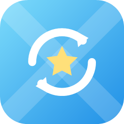

iSyncX 日本語iSyncX copies songs and playlists from iTunes for Windows to your Android device over Wi-Fi, and writes the play counts and star ratings from Android back to iTunes.
Free for up to 300 songs. To sync all your songs, you buy it once in the app. No subscription.
Sync all songs or just the playlists you choose over Wi-Fi. Interrupted syncs resume. Playlists are also saved as .m3u, so other players can use them.
Just listen in your favorite music player. iSyncX records play counts and last played dates and reflects them in iTunes, counting plays the same way iTunes does.
Ratings you give on Android go to iTunes. They also stay in step with the 5-star ratings in Poweramp and PlayerPro.
Every write to iTunes can be undone, one by one. Before the first write each day, iSyncX backs up your iTunes library automatically.
Your data travels only between your PC and your Android device, on the same Wi-Fi, over an encrypted connection.
iSyncX never deletes songs, playlists, or your iTunes library on the PC.
You use iSyncX on both your PC and your Android device.
Hands your iTunes library to your Android device. Runs in the notification area.
Download the test version (ZIP)This is the version for the testing period. Extract the ZIP and run iSyncX.exe. It isn't code-signed yet, so if "Windows protected your PC" appears, click "More info" → "Run anyway". The official release will be on Microsoft Store.
Where you sync, rate songs, and record your plays.
Coming to Google Play| PC | Windows 10 (version 1809 or later) or Windows 11, 64-bit. Mac is not supported. |
|---|---|
| iTunes | iTunes for Windows (64-bit). Get it from "Looking for other versions?" on Apple's download page (apple.com/itunes). The Microsoft Store version of iTunes, the Apple Music app, and the Apple Devices app can't be used for syncing. |
| Android | Android 8.0 or later. |
| Network | Your PC and Android device on the same Wi-Fi. Set the Windows network profile to "Private". |
| Music player | Use any player you like. Poweramp is recommended: play counts, ratings, and playlists work most reliably with it. |
iSyncX on the PC doesn't start automatically. Start it on the PC before you sync.
For problems or questions, please write to the address below. In the Android app, tap ︙ at the top right, then "Contact us" to start an email with the details we need to look into problems.
iTunes and Apple Music are trademarks of Apple Inc. Android and Google Play are trademarks of Google LLC. Windows and Microsoft Store are trademarks of Microsoft Corporation. Other product names are trademarks or registered trademarks of their respective owners. iSyncX is not affiliated with or endorsed by Apple Inc., Google LLC, or Microsoft Corporation.